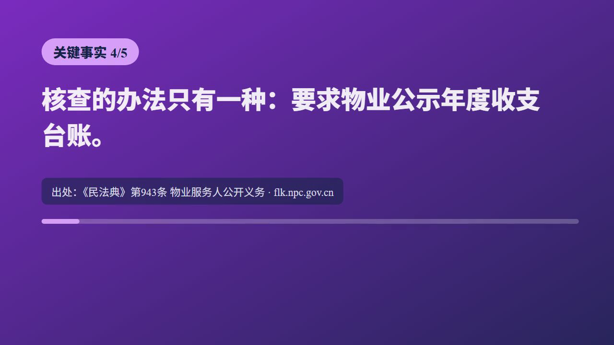

一句话：把"查资料 → 写脚本 → 配音 → 画面渲染"整条电视台流水线，压缩成一个 AI 智能体工作流，人只做选题把关者和事实审核员。
作者（十年 NLP 算法工程师）的账号不出镜、不棚拍、无团队：资料挖掘、脚本文案、音画合成全由 AI 跑完，快则 20 分钟、慢则 1 小时出一期 10 分钟以上的深度长视频。他的原话是——"我做的事情其实很明确：做选题的把关者，在关键节点拍板，确认无误后分发。"
作者最看好的方向始终是深度内容 + 实时热点，两者分工明确：
| 热点（15 秒短视频的活） | 深度（10 分钟长视频的活） | |
|---|---|---|
| 给观众什么 | 一个自带情绪和讨论度的"初始疑问"：发生了什么 | 知其然背后的所以然：我中招了吗？官方回应有没有漏洞？ |
| 物业费例子 | "XX 小区业主与物业爆发冲突"（制造情绪） | "物业费明细里含哪几项隐性支出？业主查验台账的法律依据是什么？"（提供解药） |
| 观众行为 | 看 10 秒划走 | 留下来看完，因为心存疑虑 |
AI 在这里的真正价值：把"查原始卷宗、核对数据、做画面"从几天压缩到几十分钟，让个人创作者能在热度正盛的窗口期把有"硬核增量"的长视频递到观众面前。
作者做长视频最大的历史硬伤在素材匹配：过去靠 Pexels 等版权库找空镜素材铺满底轨。画面质感很好，但与旁白核心信息严重脱节——嘴上在拆解法规条文，眼睛看到的却是路人喝咖啡、空旷街道。观众只能纯靠耳朵听，完播率上不去。
转机：新模型（文中 GPT-6-Astra）出来后，作者冒出一个念头——如果不套以前那些条条框框的 Skill，让它从零自由发挥，它会怎么做？结果画面贴合度大幅超出预期，很多过去需要高强度人工干预才能卡准的具象素材，模型自己抓取得非常自然。
他的反思一针见血：旧 Skill 固化的操作范式，往往就是新模型发挥潜力的天花板。模型本有能力交付 90 分的结果，却被我用旧规矩按在了 60 分。
由此沉淀出的工作流升级三原则：
| 原则 | 怎么做 |
|---|---|
| 定期做"无约束实验" | 挑一个熟悉的经典题目，只给成片交付标准（画面相关度、出处严谨度），剥离原有步骤预设，看新模型用什么路径解题 |
| 留结果，不留死板路径 | "事实要有出处、声画必须同步"是死指标；中间用什么爬虫、调什么接口、抓什么画面——保持开放 |
| 警惕经验主义 | 不要只在原流程上打补丁（只会越来越臃肿）；给 AI 重新洗牌的机会，往往有降维打击般的惊喜 |
作者平时启动制作只给一句话 Prompt："帮我做一个关于 XXX 的深度解读视频。"敢这么省事，是因为所有红线和规范都内嵌在底层全局 Skill 里。他把 Skill 比作给 AI 员工签的《长期岗位职责书》：
| 两类东西 | 例子 | 处理方式 |
|---|---|---|
| 质量标准（死卡） | 结论必须有官方出处；字幕适配移动端可读性；声画必须同步 | 写死在 Skill，每次验收必查 |
| 执行手段（放开） | 怎么检索网页、怎么剪切片段、用什么工具抓画面 | 留给模型自由发挥，换代不 Rewrite |
知识库对照：这与 [[AgentSkills技能包]]（SKILL.md 方法论包）、[[项目宪法Constitution]]（根本法一次写全功能守）、[[Agent指令文件AgentMd]]（员工守则实测改行为）、[[代码管边界提示词管判断]] 完全同构——"挽回不了的归代码死卡，能挽回的归提示词判断"。
抓热点：让 AI 交"带参数的研判表"，不是标题党榜单
作者的原版检索提示词（可直接复用）：
判定标准：AI 连可验证数据源都给不出、只会空谈"全网都在热议"——直接 pass。
审选题：人工研判现有材料能否撑起立论（最耗脑环节）
反例："某网红雪糕为什么卖这么贵"——手里只有终端售价，克重成本、代工模式、冷链扣点全核实不清就做"暴利拆解"，非常业余且高危。要么收缩切角（改做"不同克重与乳脂含量的规格差价分析"），要么补一手财报和行业研报。
生死及格线：看完大纲，能不能用一句大白话向普通人讲明白"看完这个视频你能彻底懂什么"。答案只有"你会觉得这事很离谱"的纯情绪题，坚决不做。
跑生产：圈定问题与边界，释放 AI 算力
框死边界后，AI 自己调浏览器查原始文档、跑语音合成、卡视觉轴渲染。每步产物必须扎实承接上一阶段：信源有假→文案全盘皆输；文案讲不通→画面再炫也是工业垃圾。
细核对：像新闻事实核查员一样排查（10~15 分钟机械化清单）
| 检查项 | 标准 |
|---|---|
| 核心自洽 | 成片有没有真正回答开头的设问？ |
| 声画对齐 | 说"这家代工厂"时，画面必须是该企业实景或企查查信息，绝不能张冠李戴 |
| 字符校对 | 字幕里的金额、单位、法规条款号逐个对 |
情绪脱水测试（第 4 阀）的玩法：把脚本初稿里"令人发指""套路深""惊天内幕"全删掉，看剩下的事实逻辑站不站得住。推动进度条前进的必须是事实密度，不是骂街的语调。
本仓库用零依赖 Python 确定性复刻了这个五阀评分器（exercise\ex1_xuanti.py），真实运行结果：
| 测试题 | 阀1 时效 | 阀2 普适 | 阀3 增量 | 阀4 脱水 | 阀5 叙事 | 裁决 |
|---|---|---|---|---|---|---|
| "买房后这 4 笔物业暗扣，你每年多交了多少冤枉钱" | PASS（36h） | PASS（泛化钩子） | PASS（2 条一手信源） | PASS（保留 100%、4 处事实引用） | PASS（换了叙事型） | PASS 放行 |
| "A 市阳光花园小区物业跑路，业主愤怒：简直丧良心" | FAIL（3348h 旧闻） | FAIL（个案地名） | FAIL（1 条无链接） | FAIL（只剩 53%、0 处事实） | FAIL（同型连打） | 一票否决 |
对照知识库：[[AI味模式库与信号非证据]]（情绪词=AI味信号）、[[事实与判断分离]]（确定性代码做裁决）、[[HardFailure一票否决与发布门禁]]（同款门禁思想）。
做深度舆论拆解，品牌公关投诉几乎不可避免（作者的荣耀锁屏广告、学生牛奶两期高播放视频都被投诉过）。他能赢下申诉，靠的是严格的前置合规三步：
| 纪律 | 要点 |
|---|---|
| 撰写即归档 | 别等收到投诉才翻浏览器记录！成片出来后把"这句话 ↔ 视频第几分几秒"对应表建好，申诉时完整证据链打包甩过去 |
| 表述强度对齐信源 | 信源写"有消费者质疑"，旁白就必须是"涉嫌/引发质疑"，绝不能偷换成"官方已认定欺诈"；"据多方报道称"开头的无出处谣言依然是谣言，找不到白纸黑字依据直接删 |
| 发布前 5 分钟生死复查 | 血亏教训：15:50 发布的视频基于上午旧事实，当事品牌下午两点已开发布会澄清。所以点名具体品牌的片子，发布前最后 5 分钟全网搜一遍最新回应；事实重大逆转宁可延后推倒重来 |
知识库对照：[[证据优先质检ProofOverClaims]]、[[事实与判断分离]]、[[证据状态机]]（预告≠完成，质疑≠坐实正是状态混装的反面教材）。
文章成本账单里的剪辑合成框架就是 Remotion（开源，GitHub remotion-dev/remotion，本仓库已克隆 repo\ @ b74a8b8）：它把视频当成 React 组件来渲染——每一帧都是你的组件在给定帧时间点画出来的页面，参数（props）进、mp4 出。个人/3 人以下小团队免费，商用须遵守官方 License。
| 路线 | 代表 | 一句话 | 谁掌控 |
|---|---|---|---|
| 手工剪辑 | 剪映 / PR | 人拖时间轴 | 人，慢但直觉 |
| 分镜表驱动 | [[分镜表驱动生成]]（Pixelle-Video） | Storyboard JSON 当传送带，各工序填空 | 流水线 |
| 声明式源语言 | [[声明式视频源语言]]（hypit SVML） | 视频当源码写，台词锚词不锚秒 | 编译器 |
| 组件化逐帧渲染 | Remotion（本文） | 每帧=React 组件一次绘制，props 驱动 | 代码 + 任意数据源 |
本仓库真渲染了一条 33.4 秒 demo（exercise\remotion_app\out\demo.mp4）：合成时长由 calculateMetadata 从真实 TTS 音频时长算出（1002 帧 = (30.38s+3s 片头)×30fps），逐句"证据卡"的出入点全部来自分句配音实测时长。下面是渲染成片真实抽帧：

文章用火山引擎语音合成（几十元/月，按字数计费）。本仓库离线复刻用 edge-tts（免费零 key）。关键工程动作只有一个：逐句配音、逐句实测时长，让画面时间轴从音频时长推导出来——这正是知识库 [[词锚定语义时间]] 的思想：锚内容，不锚秒数。
Remotion 侧每句话包一个 <Sequence from={start×30fps}>，配音整轨挂在片头 3 秒之后——画面切换点和旁白换句点天然对齐，永远不存在"慢慢漂移"问题。改稿只需重跑 ex2 + ex3，时间轴自动重算。
对照 [[级联语音管线]]：那是"对话机器人实时听说"的管线（管 ttfa 延迟），本篇是"离线成片"管线（管时长对齐）——同是 TTS，评价指标完全不同。
作者的真实软硬件账单：Claude 订阅 $20/$100 每月（主力生产工具是 Claude Code）+ 火山引擎 TTS 几十元/月 + Remotion 个人免费。核心结论只有一句：AI 生产力的边际成本，完全取决于你的执行力与出片密度。
| 实验 | 复刻文章哪一环 | 真实结果 |
|---|---|---|
ex1_xuanti.py | 五项内审法 + 情绪脱水测试 | 好题 5/5 PASS，纯情绪题 5/5 一票否决（脱水保留 53%、0 处事实引用实锤） |
ex2_tts.py | "调用配音"工序 | 5 句 edge-tts 配音 30.38s，逐段实测时长生成 timeline.json |
ex3 remotion_app\ | "合成渲染"工序 | Remotion 4.0.532 真渲染 1002 帧 / 33.4s / 2.9MB mp4，声画同步抽帧验证 |
ex4_cost.py | Token 账单 | $1.67/$10 复算吻合；本地复刻版 ¥0 API 费 |
文章给新人的三条起步建议（完全适配本仓库玩家）：
| ① 不要从宏大叙事开始 | 第一期选你本来就很熟的小领域——只有你足够懂，才能一眼看出 AI 在哪瞎编、逻辑在哪断层，才下得出精准修改指令 |
| ② 完整死磕出一期 demo | 抓题→大纲→卡片→音画→审片，闭环完整走通一次（本实验就是这条闭环的离线微缩版） |
| ③ 沉淀自己的规范 | 把踩过的坑提炼成 1~2 条硬核验收标准，写回底层 Skill——这正是本仓库 [[AgentSkills技能包]] + [[质检Gate与自我纠错循环]] 的日常 |
| 能力 | 你能拿来干什么 |
|---|---|
| 五阀评分器（ex1 可直接改） | 任何内容选题（公众号/视频号/B 站）开工前的自动质检；把 EMO_WORDS 与事实计数规则换成你的赛道口径即可 |
| 分句 TTS 时间轴（ex2） | 任何"配音驱动画面"的产物：课程视频、产品讲解、播客切片；换 voice 参数即换主播 |
| Remotion 数据驱动渲染（ex3） | 批量产视频模板：改 props.json 换文案配色，一条命令出新片；数据大屏、财报解读卡同理 |
| 成本-产量模型（ex4） | 评估任何订阅制 AI 工具的真实单件成本，倒推"该不该上 Max 档" |
| 《核心事实卡》纪律 | 任何公开内容创作的合规护甲：观点↔信源↔时间戳三挂钩 |